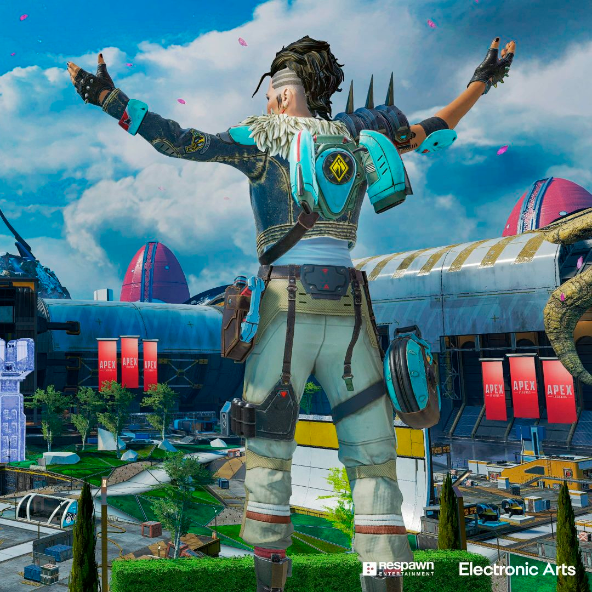
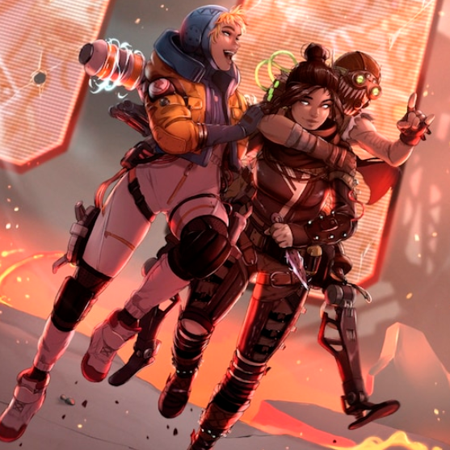

Apex Legends — компьютерная игра в жанре многопользовательского геройского шутера от первого лица и королевской битвы, разработанная американской студией Respawn Entertainment и выпущенная компанией Electronic Arts для платформ Windows, PlayStation 4 и Xbox One 4 февраля 2019 году. Действие Apex Legends происходит в той же самой вселенной, что и действие игр Titanfall и Titanfall 2; игра заимствует некоторые элементы игровой механики из Titanfall 2.
В отличие от других «королевских битв», где все игроки в начале сражения управляют одинаковыми персонажами, Apex Legends перед началом каждого матча предлагает выбрать одного из героев со своими уникальными способностями. Также, они поделены на 5 классов начиная с 16 сезона «Разгул»: «Штурм», «Столкновение», «Разведка», «Контроль» и «Поддержка» каждый из которых имеет определённые дополнительные способности. Игра использует необычную для жанра королевской битвы систему «пинга» — сигналов, которые можно подать товарищам в группе, чтобы привлечь их внимание.
В каждом матче обычно участвуют двадцать команд по три игрока. Игроки могут присоединяться в отряд к друзьям или случайным образом подобраны к другим игрокам. Перед матчем каждый игрок может выбрать одного из 23 игровых персонажей, имеющих определённые способности, такие как тактические, пассивные и ультимативные, которые относятся к разным сезонам трейлер которых можно увидеть на ютубе, за исключением того, что один и тот же персонаж не может быть выбран в отряде более одного раза.
Затем все команды размещаются на десантном корабле, который летит над игровой картой. Один игрок в каждом отряде является выпускающим, выбирая, когда отряд должен прыгнуть из десантного корабля и где приземлиться. Однако игроки вправе отклониться от пути отряда и высадиться в одиночку. Одно из главных отличий игры от других представительниц жанра — отсутствие соло-режима. Только двадцать команд по три человека в каждой или тридцать команд по два человека.
Оказавшись на земле, отряд может собирать оружие, броню и другое снаряжение, разбросанное по зданиям, в ящиках или в небесных грузах, при этом следя за другими отрядами. Apex Legends включает в себя невербальную коммуникационную «систему отметок», которая позволяет игрокам использовать свой игровой контроллер, чтобы сообщить своему отряду определённые направления, расположение оружия, врагов и предлагаемые стратегии, но помимо этого игроки могут общаться между собой используя голосовой чат. Хотя игра предлагает варианты движения, аналогичные другим шутерам, она включает в себя некоторые особенности игрового процесса из предыдущих игр Titanfall, такие как возможность лазать по коротким стенам, скользить по наклонным поверхностям и использовать тросы, а также вышки которые позволяют легендам взмыть в небо на некоторое время для быстрого перемещения по местности.
Со временем безопасная зона игры будет уменьшаться в размерах вокруг случайно выбранной точки на карте; игроки за пределами безопасной зоны получают урон и могут умереть, если не достигнут безопасной зоны вовремя используя тепловые щиты которые спасают от действия «зоны». Это также ограничивает отряды меньшими пространствами для ускорения схваток. Последний отряд с оставшимися в живых членами получает звание «чемпионов» этого матча. Игроки награждаются в зависимости от расположения их отряда очками опыта. Игроки, попавшие в нокаут в ходе игры, могут быть реанимированы своими товарищами по команде. Если игрок был полностью убит, его все ещё можно воскресить, если член его команды заберет баннер возрождения, который появляется в том месте, где его союзник умер и принесёт его к маяку возрождения. Также он может вызвать «Мобильный маяк» для возрождения союзника. Баннеры, однако, должны быть собраны в течение определённого времени, прежде чем истечет срок его действия и игрок исчезнет из игры. Однако класс поддержки может создать их в репликаторе.